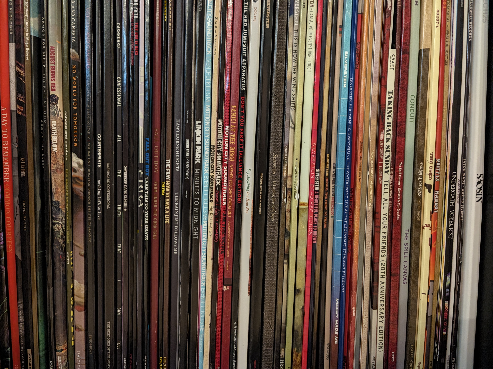

My Loss Is Your Gain: Vinyl Priced To Sell!

About My Collection
Pictured are some of the most sought-after vinyl records I own. I am desperate to sell them at a reasonable price to pay for my tuition this
semester. Please no low ball offers. I KNOW WHAT I GOT!
Available Music Genres
Music from the early 2000s to today, featuring alternative, rock, metal, and emo genres. Perfect for any music lover or collector who loves headbanging, double-bass drums, shredding guitar
solos, and tear-jerker lyrics.
What Makes These Records Special?
- Each record is carefully handled between sessions on the turntable.
- Many are first pressings or limited editions.
- There are several signed copies available from the best artists in the industry.
Inventory For Sale
Linked items include details and signatures for authenticity.
- A Day To Remember - Homesick (Mint)
- Armor for Sleep - What To Do When You're Dead (Near Mint)
- Erra - Self-titled (Mint)
- Linkin Park - Hybrid Theory (Near Mint)
- Linkin Park - Minutes To Midnight (Near Mint)
- Real Friends - Blue Hour (Mint)
- Silverstein - Discovering the Waterfront (Mint)
-
The Red Jumpsuit Apparatus - Don't You Fake It (Signed) (Mint)
- The Used - Self-titled (Mint)
- Underoath - Define the Great Line (Mint)